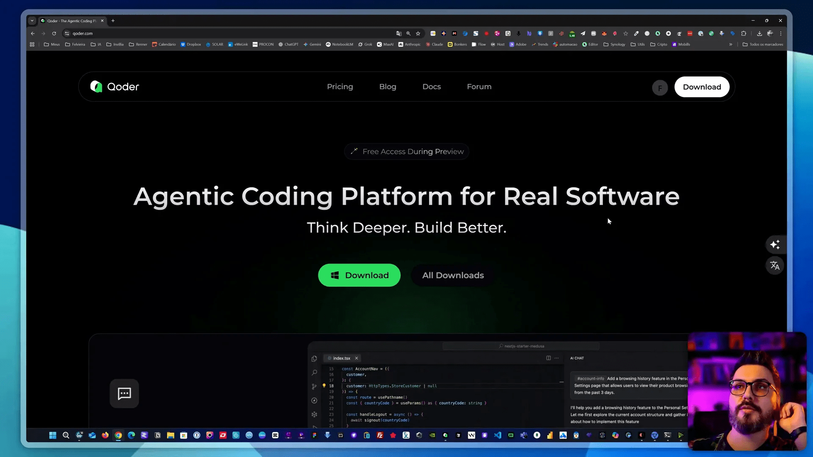
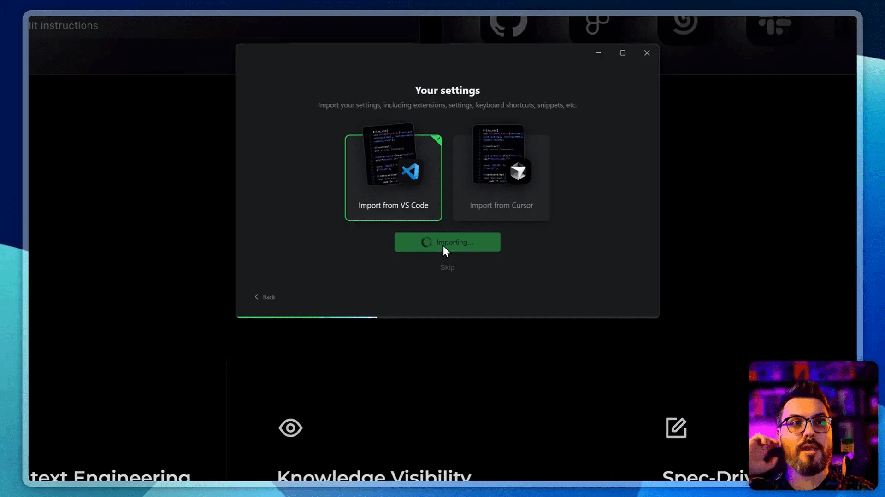
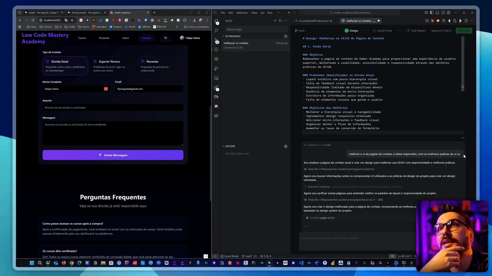
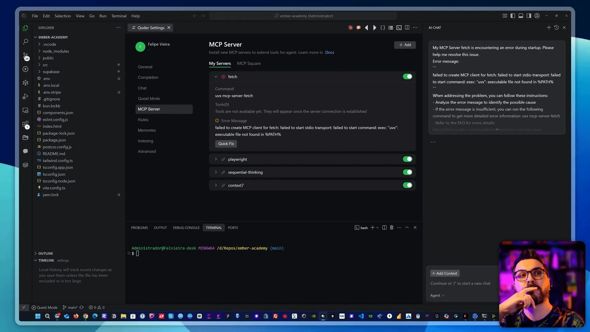
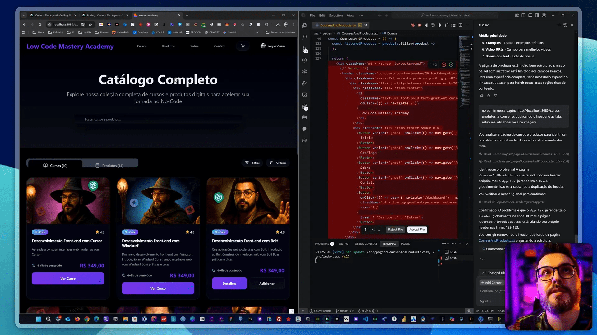
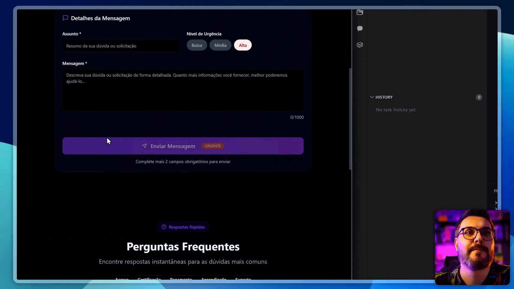
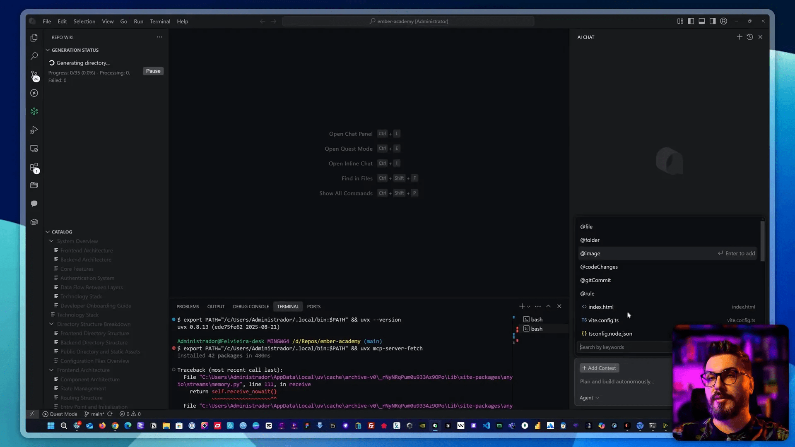

Eu sou o Felipe DEV e, se você viu o meu conteúdo, sabe que eu sempre testo ferramentas de IA para desenvolvimento. Neste artigo eu vou explicar por que eu decidi trocar o Cursor, como conheci o Qoder (a nova IDE de IA do Alibaba) e qual foi o meu plano de migração de ferramentas. Vou também mostrar passo a passo a instalação, a configuração com VS Code, os testes que fiz no meu projeto (Embere Academy) e as alternativas que avaliei, incluindo Windsurf, Quiro, Cloud Code, Claude e outras. Além disso, vou compartilhar valores reais que gastei, gargalos e a minha decisão final sobre o setup que vou usar daqui pra frente — tudo isso integrando o espírito de vibecoding cursor bolt lovable replit ai na discussão.
Sumário
- 💸 Por que eu cancelei o Cursor e comecei a procurar alternativas
- 🧭 Conhecendo o Qoder — a nova IDE de IA (prévia gratuita)
- 🛠️ Instalação e primeiros passos com Qoder
- 🤖 Modo Quest, Actionflow e automação de tarefas
- 🔌 Integração com VS Code, extensões e memória
- 🧪 Testando no projeto Embere Academy (meu case real)
- 📊 Custo vs. benefício: minha experiência com Cursor e alternativas
- ⚖️ Alternativas que testei: Windsurf, Quiro, Trieson, Claude e replit
- 🔁 Meu setup final e fluxo de trabalho atual
- 💡 Dicas práticas para migrar do Cursor sem perder produtividade
- 📌 Observações técnicas sobre qualidade de modelos (E4, Ops4, Claude)
- 🧭 Qoder: pontos fortes e o que precisa melhorar
- 🛒 Onde eu recomendo gastar e onde economizar
- 🤔 FAQ — Perguntas frequentes sobre a troca e ferramentas
- 📣 Últimas recomendações para quem está em dúvida
- 🧾 Recursos, links e próximos passos
- ✔️ Conclusão — minha decisão e o que você deve fazer agora
- 🤝 Agradecimentos e convite
- 📚 FAQ Adicional — respostas rápidas
💸 Por que eu cancelei o Cursor e comecei a procurar alternativas
O ponto de partida foi simples: o Cursor mudou a precificação e passou a consumir muito crédito quando eu utilizava modelos avançados como o GPT-4 (ou variantes comerciais equivalentes). Em poucos dias o gasto subiu de forma assustadora. Eu tinha duas assinaturas do Cursor — uma principal e outra secundária — e acabei reduzindo pra uma só. Neste mês decidi finalizar a assinatura do Cursor por conta desse custo e da forma como os créditos evaporavam. Desde então fiquei em busca de alternativas que me dessem produtividade semelhante sem estourar o orçamento.
Para contextualizar: quando eu uso modelos mais potentes, em 30 minutos de uso intenso eu podia consumir todo um crédito de $20 dólares do Cursor. Em outro caso, usando o Paint To Go (que usa modelos avançados), em apenas dois dias eu gastei $70 — foi esse tipo de coisa que me fez reavaliar a viabilidade financeira do Cursor para o meu fluxo. Então, resumindo: qualidade boa, mas custo insustentável para o meu uso. Foi aí que surgiu o Qoder, a nova IDE do Alibaba, e outras opções como Windsurf, Quiro e Cloud Code entraram na minha lista de testes.
🧭 Conhecendo o Qoder — a nova IDE de IA (prévia gratuita)
O Qoder chegou como uma surpresa: uma IDE de IA que, visualmente e funcionalmente, lembra bastante o Cursor. Ele traz o conceito de “engenharia de contexto” integrado — ou seja, tenta entender melhor o repositório e a arquitetura do seu projeto para ajudar de forma mais coerente. Eu fiz o download, testei e gravei todas as etapas. A primeira impressão foi muito boa: interface limpa, modo “Quest” (modo agente/tarefas), integração com projetos, memória de chat e a promessa de autocompletar e geração de código conforme o contexto do repositório.
Se você está buscando alternativas e quer experimentar ferramentas novas, esse lançamento é relevante. No meu teste inicial, o Qoder estava gratuito em preview — o que facilita experimentar sem compromisso. Cabe destacar que, por enquanto, o Qoder não expõe uma tabela de preços pública (no momento dos testes não havia pricing implementado), então é algo a acompanhar antes de migrar completamente para ele em produção.

Eu baixei da página oficial e deixei o link pra galera testar — em breve pode ter mudanças, então aproveite a prévia.
🛠️ Instalação e primeiros passos com Qoder
Instalar o Qoder foi simples. Ele oferece importação direta de configurações de VS Code e até permite importar de Cursor. Como eu uso bastante o VS Code (porque tenho o GitHub Copilot e outras extensões que me ajudam no dia a dia), importei a configuração do VS Code para o Qoder para manter minhas extensões principais.
No processo de instalação eu vi que o Qoder tenta mapear extensões e configurações que você já tinha. Ele levantou containers, remote explorer e outras extensões que eu uso com frequência. Em alguns pontos houve pequenos erros (algumas extensões não ativavam automaticamente), mas no geral ele conseguiu replicar bastante do meu setup do VS Code.

Algumas observações práticas da instalação:
- O Qoder tenta instalar dependências automaticamente via PowerShell (ou terminal) — isso economiza tempo, mas pode falhar em ambientes com permissões restritas.
- Ele mantém um histórico de ações e logs de instalação — útil para debugar o que falhou.
- Há suporte para integração com ferramentas como Figma, Google Drive, Redis e Postgres via plugins, embora nem todos funcionem perfeitamente ainda.
🤖 Modo Quest, Actionflow e automação de tarefas
Uma das features que mais me chamou atenção foi o “Quest Mode” — um modo de agente que permite delegar tarefas complexas à IDE. Funciona assim: você descreve uma tarefa (ex.: melhorar a página de contato, deixar responsivo, ajustar UI/UX) e o Qoder cria um fluxo de ações (Actionflow) que pode incluir alterações em múltiplos arquivos, criação de componentes e testes automáticos.
No meu teste, pedi para melhorar a página de contato e deixar responsiva com boas práticas de UI/UX. O Qoder fez uma varredura no codebase, identificou componentes e propôs layout, paleta de cores (ele inclusive reutiliza a paleta do projeto quando possível), espaçamentos e micro-feedbacks. O agente produziu um design de orientação e começou a aplicar correções automaticamente, criando commits ou sugestões no repositório.

Essa automação é muito interessante, especialmente para tarefas repetitivas e para quem trabalha com vibecoding cursor bolt lovable replit ai — ela permite que você reserve o foco para decisões arquiteturais, enquanto a IDE faz as mudanças mecânicas.
🔌 Integração com VS Code, extensões e memória
Importei minhas extensões do VS Code para o Qoder, e isso foi bem prático. Ele trouxe boa parte das extensões e tentou mapear equivalentes caso houvesse alguma diferença. Um diferencial foi a memória de chat — o Qoder salva lembranças do que você discutiu no projeto (indexação de conversas), o que ajuda quando você precisa retomar contexto semanas depois.

Alguns pontos técnicos:
- Context Set: é útil para manter informações relevantes do projeto.
- Indexação de arquivos: o Qoder analisa o codebase para responder com mais precisão.
- Question mode: permite criar tasks que ficam rodando em background — muito útil para pipelines de melhoria contínua.
No meu caso, houve pequenos bugs de ativação de certas extensões, mas nada que impedisse o uso diário. Vale observar que a integração com Git e o controle de versão funcionam como no VS Code, então o fluxo de commits e PRs não muda muito.
🧪 Testando no projeto Embere Academy (meu case real)
Para avaliar realmente a aplicabilidade do Qoder eu abri o Embere Academy, que é o projeto onde ensino a construir um SaaS com Cursor. O objetivo era ver se o Qoder conseguia entender um projeto real, identificar arquivos-chave e propor melhorias úteis. Aqui vai um passo a passo do que eu cobri:
- Importei o projeto para o Qoder;
- Dei permissão para indexação do codebase;
- Pedi para gerar resumos do projeto e criar tarefas de correção;
- Solicitei melhorias na interface de cursos e na página de produtos digitais;
- Analisei os commits/alterações propostas e apliquei as que fazia sentido.
Resultados práticos:
- O Qoder conseguiu identificar componentes como CourseCard, ProductDetail e o dashboard administrativo.
- Ele apontou duplicações de elementos e sugeriu remoções e refatorações.
- Fez correções automáticas de alinhamento e espaçamento em várias áreas, deixando a UI bem mais coerente em poucos minutos.
Por exemplo, em uma parte o Qoder detectou que a listagem estava duplicando elementos. Ele foi direto ao arquivo TSX responsável (course_and_product.tsx) e propôs correções de layout e remoção de duplicação — muitas mudanças foram precisas e economizaram horas de debug. Em alguns pontos precisei ajustar manualmente porque o Qoder criou classes inesperadas, mas a maioria das alterações foi muito útil.

📊 Custo vs. benefício: minha experiência com Cursor e alternativas
Agora o que todo mundo quer saber: valores, custos e que combinação de ferramentas vou usar. Vou ser direto e transparente com os números que me levaram a migrar parte do meu fluxo:
- Cursor: plano de $20 dólares + créditos. Consumo com GPT-4/Ops4 muito alto. Em pouco tempo eu esgotei créditos e deixei de justificar o custo.
- Windsurf: plano pago $10 dólares. Apesar de não entregar a mesma qualidade de outputs do Cursor com E4, entrega um custo-benefício bom para uso contínuo.
- Quiro (Amazon): também tem plano pago (por volta de $20 dólares) mas na minha experiência alucina um pouco e ainda não substitui totalmente o Cursor.
- Cloud Code / Claude: eu uso Cloud Code para rodar modelos como Claude e, apesar dele ser terminal (sem interface rica), a qualidade de geração do Claude (especialmente o Claude 4) compensa em muitos fluxos. Cloud Code pode custar até $20 por mês na subscrição que usei.
Resumo financeiro do meu mês de uso (valores aproximados):
- Cursor (antes): $120 (soma de várias assinaturas e uso de créditos extras);
- Windsurf: $10;
- Trikon/Trieson (IDE alternativo que testei): $10;
- Cloud Code (uso de Claude/Claude Max): plan + consumo variável.
Com isso, optei por cancelar o Cursor e migrar para uma combinação:
- Windsurf (usar como IDE com AI por $10/mês);
- Trikon (IDE alternativa por $10/mês; no primeiro mês tem desconto e sai por $3);
- Cloud Code para chamadas diretas a modelos de maior qualidade quando necessário.
Portanto, o meu pacote foi reduzido em comparação ao gasto com o Cursor, mas mantendo qualidade nas partes que realmente importam no meu fluxo. A estratégia aqui é balancear custo e resultado: uso Windsurf e Trikon para produtividade diária, e Cloud Code/Claude quando quero qualidade máxima em geração de texto/código.
⚖️ Alternativas que testei: Windsurf, Kiro, Trae, Claude Code e Replit
Eu não testei só o Qoder. Passei o mês explorando muitas opções e vou listar minhas impressões rápidas sobre cada uma:
- Windsurf: bom custo-benefício, integra bem com meu fluxo e não consume créditos tão rápido quanto o Cursor. A qualidade com modelos como E4 é um pouco inferior, mas aceitável para muitas tarefas.
- Kiro (Amazon): interface madura, mas em alguns fluxos ela alucina e exige supervisão humana. Ainda assim, é uma opção para quem já está no ecossistema AWS.
- Trae: IDE leve, com bom custo-benefício; o que me atraiu foi o preço e a promessa de integração. Vou migrar meu IDE principal para ele e testar em produção.
- Cloud Code: terminal, poderoso e ótimo para usar o Claude Max ou outros modelos; exige configuração, mas entrega qualidade e controle de custos.
- Replit: ótimo para prototipagem rápida e vibecoding (por isso a menção ao termo vibecoding cursor bolt lovable replit ai é pertinente); não substitui IDE local para projetos grandes, mas é excelente para testes e ensino.
Eu pessoalmente vou manter Windsurf e Trikon como IDEs do dia a dia e Cloud Code para chamadas que exijam a última palavra em qualidade de modelo. Se o Qoder evoluir com pricing competitivo e mais estabilidade, eu posso migrar parte do fluxo para ele, principalmente pelo modo Quest e Actionflow que achei muito promissor.
🔁 Meu setup final e fluxo de trabalho atual
Depois de testar tudo, montei um fluxo que equilibra custo e produtividade. Vou descrever em detalhes para você replicar se quiser:
- IDE principal: Windsurf (uso diário para devs comuns) — $10/mês;
- IDE secundária: Trae (meu plano de backup) — $10/mês (ou $3 no primeiro mês em promoções);
- Modelos de alta qualidade: Cloud Code com Claude Max quando necessário (usar apenas para trechos que exigem excelência);
- Ferramentas de colaboração e deploy: Github + Bolt (deploy automatizado quando necessário);
- Monitoramento de gastos: uso uma ferramenta que mostra quanto estou gastando em modelos (eu usei uma interface que monitora Cloud Code e consumo dos modelos Claude/others);
- Qoder: manter em preview para testes (se sair um plano acessível e com boa qualidade, considerar migrar tasks específicas para ele, especialmente por conta do Actionflow).
Essa combinação me dá controle de custos e um nível de produtividade aceitável. Em vez de gastar $120 por mês com Cursor e créditos que evaporavam rápido, eu gasto bem menos com essa mistura, e mantenho acesso a modelos de qualidade quando preciso.
💡 Dicas práticas para migrar do Cursor sem perder produtividade
Se você também está pensando em migrar do Cursor, aqui vão dicas práticas que eu usei para suavizar a transição:
- Faça um inventário das features que você usa no Cursor (ex.: autocompletion, geração de testes, refatoração, agentes/quests).
- Teste uma alternativa por vez em um projeto real (não só com “hello world”). Eu testei o Qoder e Windsurf diretamente no Embere Academy para ver comportamento real.
- Monitore gastos com uma ferramenta externa se possível — saber quanto cada modelo consome é crucial.
- Use uma IDE secundária mais barata para tarefas rotineiras e mantenha o modelo caro apenas para geração crítica.
- Exportar/importar configurações: se a nova IDE permite importar do VS Code (como o Qoder), faça isso para manter extensões essenciais.
Além dessas dicas, recomendo testar modos de agente (Quest/Actionflow) com calma — nem todo output vai ser perfeito, mas muitos passos repetitivos podem ser automatizados com ganho de tempo.
Turbine seu Desenvolvimento com Prompts! |
|
Você já sonhou em criar seu próprio aplicativo mas pensou que precisaria ser um gênio da programação? Chegou a hora de transformar esse sonho em realidade! Com as ferramentas no-code de hoje, você pode criar aplicativos profissionais sem escrever uma única linha de código. |
| Quero Profissionalizar meus APPs |
📌 Observações técnicas sobre qualidade de modelos (E4, Ops4, Claude)
Um ponto técnico que vale a pena entender: nem todas as implementações do “GPT-4” ou “E4” entregam a mesma qualidade. Diferenças na infraestrutura, otimizações e tuning do provedor impactam resultados e custo. Por exemplo, o Cursor aparentemente tinha acesso a uma versão bem otimizada do modelo que entregava alta qualidade, mas consumia muitos créditos. Já o Windsurf entrega um E4 menos refinado (na minha experiência) — a qualidade cai um pouco, porém o custo é menor.
Claude (especialmente Claude 4 / Max) tem performance ótima para tarefas de compreensão de código e geração contextual, e por isso eu uso Cloud Code para invocá-lo em trechos críticos. Essa estratégia de “usar o melhor modelo só quando necessário” reduz custos e mantém a qualidade quando importa.
🧭 Qoder: pontos fortes e o que precisa melhorar
O Qoder tem pontos fortes claros que me agradaram:
- Interface amigável e familiar para quem vem do Cursor/VS Code;
- Modo Quest e Actionflow com possibilidade de automação avançada;
- Indexação do codebase e tentativa de engenharia de contexto — muito promissor;
- Preview gratuito para testar sem risco.
O que precisa melhorar:
- Estabilidade em alguns plugins e ativação automática de extensões;
- Transparência no pricing — ainda não havia tabela pública ao testar;
- Algumas correções automáticas criavam classes desnecessárias — precisa de refinamento.
Se o Qoder polir esses pontos e oferecer um plano competitivo, pode se tornar uma peça central no ecossistema de ferramentas de IA para desenvolvimento.

🛒 Onde eu recomendo gastar e onde economizar
Minha filosofia atual: investir quando o ROI é claro e cortar quando o custo é apenas gasto emocional. Especificamente:
- Invista em modelos de alta qualidade (Cloud Code / Claude) para etapas críticas como geração de arquitetura, documentação e refatoração complexa;
- Use IDEs econômicas (Windsurf, Trikon) para codificação diária e tarefas repetitivas;
- Teste novas IDEs em preview (Qoder) mas aguarde pricing estável antes de migrar produção;
- Priorize ferramentas que permitam monitorar e limitar consumo de créditos.
Essa abordagem me permitiu reduzir gastos e manter produtividade alta — essencial para quem trabalha com projetos reais e cursos pagos como os meus.
🤔 FAQ — Perguntas frequentes sobre a troca e ferramentas
❓ Preciso migrar tudo do Cursor para usar o Qoder?
Não. Você pode testar o Qoder em paralelo, importar configurações do VS Code e rodar projetos específicos para avaliar. Faça migrações graduais.
❓ O Qoder é realmente grátis?
No preview que testei, sim — o Qoder estava disponível de graça. Porém, não havia pricing público naquele momento. Recomendo testar a preview e acompanhar atualizações de preço antes de migrar tudo.
❓ Qual IDE eu uso no dia a dia agora?
Meu dia a dia será Windsurf + Trikon como IDEs práticas, com Cloud Code para demandas de alta qualidade. Estou mantendo o Qoder em testes.
❓ Como reduzir o consumo de créditos em modelos como GPT-4?
Use modelos menores para tarefas rotineiras, limpe prompts para serem mais eficientes, e reserve modelos maiores apenas para tarefas que realmente exigem mais contexto. Monitorar gasto é fundamental.
❓ O Qoder faz o que o Cursor faz com menos custo?
O Qoder promete funcionalidades similares (autocompletion, agentes, indexação), mas ainda não tem histórico de precificação pública. Em custo-benefício, depende do pricing final e de como ele otimiza o uso de modelos.
❓ E a questão da “engenharia de contexto” do Qoder — é realmente útil?
Sim. A indexação do codebase e a tentativa de manter memória do que foi discutido trouxeram ganhos práticos. Em tarefas de melhoria de UI e refatoração, o Qoder agiu de forma eficiente, reduzindo trabalho manual.
📣 Últimas recomendações para quem está em dúvida
Se você está no mesmo dilema que eu (bons resultados no Cursor, mas custo alto), recomendo o caminho que segui:
- Testar o Qoder em preview para ver como ele lida com seu próprio codebase;
- Manter uma IDE principal econômica (Windsurf ou Trikon) para o dia a dia;
- Usar Cloud Code/Claude quando precisar de output de altíssima qualidade;
- Monitorar gastos e definir limites para evitar surpresas no cartão de crédito.
Com isso eu consegui reduzir custos, manter produtividade e ainda ter acesso a ferramentas top quando preciso. E claro: continuo testando o Qoder — se sair um plano competitivo e estável, eu posso migrar mais fluxo para ele, principalmente por causa do Actionflow e do modo Quest, que achei muito poderoso.
🧾 Recursos, links e próximos passos
Se você quiser testar o Qoder, aqui estão os passos que eu recomendo:
- Baixe o Qoder na página oficial e aproveite o preview;
- Importe suas configurações do VS Code para manter as extensões;
- Abra um projeto real (não só demo) para avaliar indexação e resposta do agente;
- Teste Tasks/Quests e monitore o que ele altera antes de aceitar os commits;
- Compare o custo-benefício com Windsurf, Trikon e Cloud Code.

Também vou disponibilizar nos meus cursos material para aprender a criar SaaS com essas ferramentas — inclusive o projeto Embere Academy que usei nos testes. Se você é membro do canal, tem acesso a alguns recursos e códigos gratuitamente. Se não for, eu disponibilizo opções na minha loja e nas postagens do canal.
✔️ Conclusão — minha decisão e o que você deve fazer agora
Depois de testar exaustivamente, minha decisão temporária foi cancelar o Cursor por conta do custo e montar um combo com Windsurf, Trikon e Cloud Code. Vou manter o Qoder em testes e, caso ele lance um plano competitivo e resolva pequenos bugs de integração, avalio migrar parte do meu fluxo para ele. A principal lição é que não existe “a ferramenta perfeita” — existe a combinação que entrega resultado, controle de custo e conforto de uso para o seu fluxo.
Se eu tivesse que resumir em uma linha: experimente o Qoder, mas mantenha alternativas de baixo custo e um modelo de alta qualidade à mão para momentos críticos. E lembre-se: vibecoding cursor bolt lovable replit ai é um ecossistema — conheça as peças e monte a sua melhor combinação.
🤝 Agradecimentos e convite
Obrigado por ler até aqui. Se você quiser que eu faça um tutorial detalhado mostrando a migração prática do Cursor para Trikon/Windsurf ou um passo a passo de como configurar Cloud Code com Claude, deixe nos comentários. Também posso gravar um vídeo mostrando minha tela e a configuração completa do Qoder com meu projeto Embere Academy.
Se curtiu, compartilhe com colegas desenvolvedores e me conte qual ferramenta você está usando hoje. Quem sabe a gente não monta um comparativo mais profundo entre Qoder, Windsurf, Cursor e Cloud Code em breve?
📚 FAQ Adicional — respostas rápidas
🔹 O Qoder integra com GitHub e repositórios remotos?
Sim. Ele tem integração com Git e pode clonar, abrir e criar branches. No meu teste, funcionou bem com repositórios locais e remotos.
🔹 Vale a pena migrar agora?
Se você está cansado de gastar muito com Cursor, vale testar o Qoder e outras IDEs em paralelo antes de migrar tudo. Faça uma migração gradual.
🔹 Como monitoro gastos com modelos?
Use ferramentas de monitoramento do próprio provedor quando disponíveis, e crie alertas para evitar surpresas.
🔹 Você recomenda pagar por vários serviços ao mesmo tempo?
Recomendo ter um combo racional: uma IDE barata, um serviço de alta qualidade pontual e uma ferramenta de deploy/CI/CD. Isso evita dependência de uma única ferramenta cara.
Obrigado novamente — até a próxima e mãos ao código!
Este artigo é baseado no meu video Troquei o Cursor! Qoder NOVA IDE de IA do Alibaba! – O primeiro editor com engenharia de contexto pra mais detalhes vejam direto no youtube.